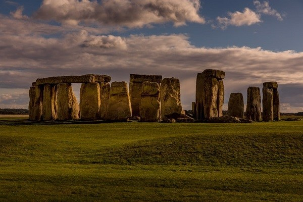
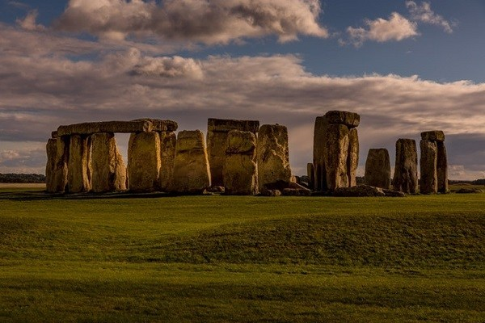

・神秘的な世界遺産：『ストーンヘンジ』について...
皆さんはストーンヘンジという文字を目にしたことはないでしょうか？
ストーンヘンジとは石を乱立させてるだけの建造物にも見えます。
しかし、自分はこの偶然的建造物に目を奪われてしまいました。
何故、普通の石なのに世界遺産に登録されているのか？
何故、こんなにも魅力的に見えてしまうのか。
何故、古代の人はこの建造物を建てたのか。
色んな事を疑問に思ったので今回はそれらを追求していこうと思います。